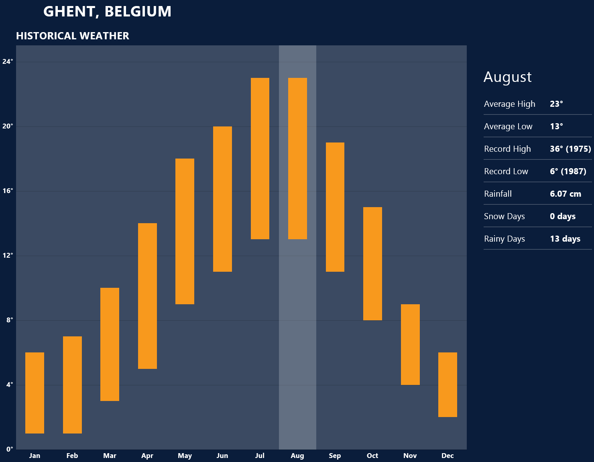

| Author: | Haolan Zhao |
|---|---|
| status: | Finished |
| revision: | First Revision 9/5/2014 |
带什么衣服是出国前都会碰到的问题，对在比利时常驻的人来说最简单的答案当然就是都带上如果不够再买。但是如果仅过来交换一年半年的，选择带的衣物就有一定的意义了。所以在此节将介绍一下比利时的天气让大家考虑携带的衣物，同时也会谈到当地留学生是如何购买衣服的。
比利时属于比较典型的海洋性气候，如下图所示，四季温度变化并不剧烈，冬天最冷一般也不会低于零下五六度，所以冬天下雪并不多见，雨夹雪反而稀松平常。切莫太过高兴，因为根特冬季相对潮湿，虽然温度不低，体感温度也着实够冷的。在夏天气温不高，最热的时候一般三十度刚出头，而且晚上基本都是二十度左右，所以可以说根特一年中有三百天是适合穿长袖的，穿短袖的时间很短。所以如果对携带衣物有取舍的话，建议多带长袖。
除了气候温和之外，海洋性气候的降水量也很充沛，简单来说就是淅淅沥沥的小雨经常下个没完，在这个时候如果有件防水防风的风衣是比较惬意的。冬天雨夹雪的时候如果套件防风保暖的大衣也是比较重要的。
在国内习惯了网购的各位到了根特可能会相当不适应，因为网购在欧洲并不方便。这或许是由于下面两个原因，相比于淘宝，eBay非常不给力，价格并不十分有竞争力不说邮费一跨国（德国法国那也是国际快递）邮资往往会让人觉得很无奈。相比于美国每个品牌发达的直销，特别是官网提供的折扣，在欧洲的品牌网站上往往都是正价，很少见打折一说。因此网购的价格优势基本为零，反而因为不能亲自试穿有时候会带来更多的问题。
当地留学生一般会选择每年两度（大概七月和一月）的打折季在市区的购物街选购，或者到遍布欧洲的“工厂店” Factory Outlet选购。与比利时靠近Roermond打折村是欧洲最大的打折村之一，可以选择参加学联组织的活动或者自行前往，在购物村徜徉一日基本上便可满足购物所需了。
除了基本的衣食住行之外，现代生活总有各种各样的需求，不过网上盛传的各种出国行李清单往往容易把人吓坏，让人感慨那并不是留学而是搬家。其实一般来说国内能买到的东西国外都能买到，可能价格上稍有区别但是很少见国内很便宜国外贵得发指的物品，所以大可不必什么都带过来。下面会提到一些常见的要带的物品，并稍加介绍。
常说留学生三大消费电子是电脑，相机，手机。借着出国良机，想把自己手里的东西全部都裁汰了是人之常情，笔者也一向认为如果这些电子产品会给生活带来许多便捷，如果有富裕何不更换。不过关于手机我想提醒一下大家，在根特手机并不如国内那么重要。
在国内手机是消磨交通时间，上课时间，睡前时间的神器，而且与人联系的十分方便。不过在欧洲并不完全如此，首先根特是个小城市，每日通勤时间很短，并没有太多交通时间要消磨；上课的时候可以直接拿个电脑出来，比手机好玩多了；至于联系的话，与国内的小伙伴的联系基本是靠微信和QQ，与国外的小伙伴泰半是WhatsApp和Facebook，与不太熟悉如教授一般都是邮件。可以说打电话通话的需求并不高。当然我并不是让大家不要买手机，只是想提醒一下与国内的区别。
此外想要提醒博士生的是，光电实验室会给博士配发笔记本电脑或者台式机，配置相对来说也是比较高端的机型，所以如果不是喜欢双电脑工作，并不需要在国内换新电脑。
出门带药一般有三个原因，一是不懂怎么形容自己身上的症状，二是担心看病太贵，三是担心国外的药“吃不惯”。
笔者对带药持较负面态度。最关键的一点是作为没有接收过医疗培训的人，自己给自己“诊疗”很难做到对症下药，有可能忽视大病征兆而带来更糟糕的结果。笔者一向认为身体不适应该看病。
此外，如果出国之后如果连得病之后都不懂怎么形容未免让人觉得可能有些太弱了。关于费用，因为比利时贯彻社会医疗保障制度，基本上看病开销并不高，普通门诊几欧即可，药品的价格也并不是很贵。至于药品“吃不惯”的问题，事实上大家稍微查一下就发现我们在国内开的药绝大部分都是西药，此外笔者认为过分强调东西方人不同也未免有因噎废食之感。
这里生活用品包括但不限于针线盒、剪刀、指甲剪、梳子、毛巾，牙刷，洗发水、牙刷、 毛巾、香皂、 肥皂盒、护肤用品、针线包、折叠伞、笔、记事本、小闹钟、拖鞋、理发工具、床上用品等等，都是一个简单的标准，如果托运还有余额就带，否则就别带直接过来买。
有些人担心床上用品在国外会比较贵，实际上这种担心大可不必，姑且不说宿舍会配给最基本的床上用品，在宜家给自己置办一套也着实花不了多少钱。
除了上面所说的这些之外，常见推荐带电饭煲和中式切肉刀的。虽然得承认在根特很难找到电饭煲，但是通过强大的亚马逊实际上也并没有那么困难，虽然是买不到国产的，但是我相信日本产的Hitachi或者Zojirushi一样能满足需求。正如一直说的，绝少数东西是在国内能买到国外买不到的。
{kind=link}